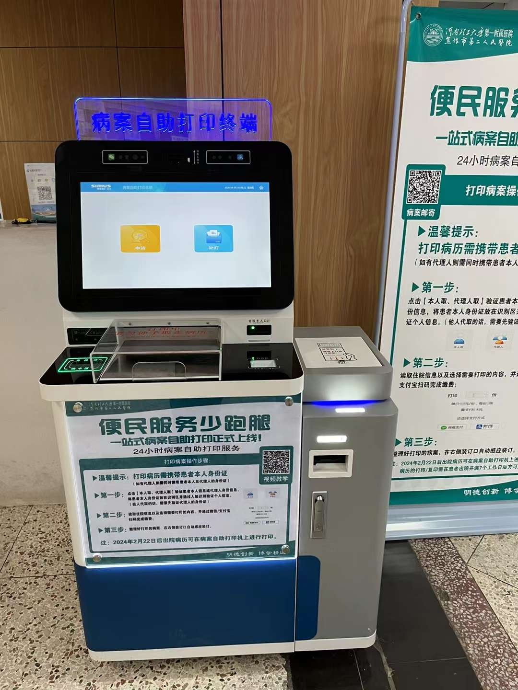
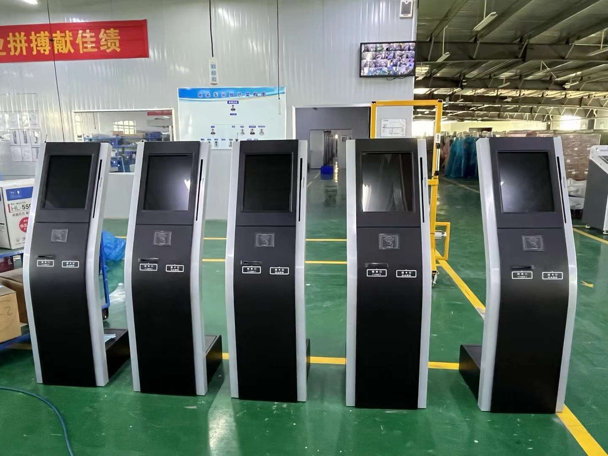
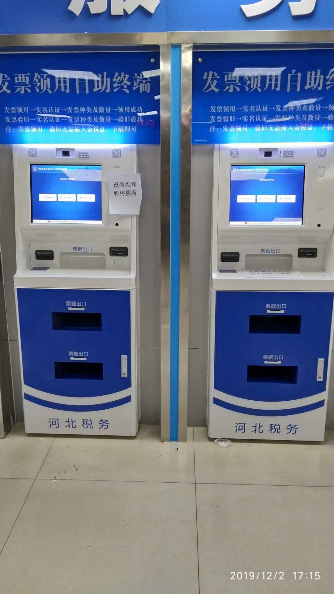

Self-service terminals for controlled-access facilities, staff service areas, public venues and document handling workflows.
Public and controlled-access facilities often need terminals for document printing, visitor flow, staff service, access-related workflows and reliable unattended operation.
Different user roles and access policies may require project-specific identity modules and software integration.
Terminal structure, module layout and enclosure requirements can be discussed according to the installation environment.
Projects may require defined operating procedures, event records and integration with local audit workflows.



Configured around document handling, identity workflows, visitor service and local software integration.
Document-printing workflows can be configured with identity checks, access policies and project-specific output controls.
Software integration can support guided procedures, event records and project-defined audit requirements.
ID, card reader, camera and other identity-related modules can be selected according to project requirements.
Enclosure materials, locks, cooling and environmental protection can be evaluated for the target installation conditions.
Selected domestic CPU platforms and operating systems can be evaluated according to project compatibility requirements.
Self-service terminal with printing, scanning and identity-related module options for document service areas.
Floor-standing terminal for visitor service, information lookup, check-in and guided self-service workflows.
Compact terminal for queue ticketing, visitor check-in and counter service points.
Public facility and controlled-access projects require specialized attention. Tell us your application, required modules, installation environment and expected quantity.